Add or Remove Users#
Note
Students enrolled in a course will be added automatically as a User in a class close to the course start date and cannot be removed.
Roles#
Instructors and PI’s are automatically assigned the Manager role within a project. Other users are either a Manager or a User, with the following permissions:
Role |
Permissions |
|---|---|
Manager |
add users, remove users, request allocations, use allocations |
User |
use allocations |
Add a User#
To a Project/Class#
Video Walkthrough
Once a project or class is created, under Manage Project, click on 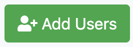
Type in usernames of the user(s) you would like to add separated by a space or on separate lines.
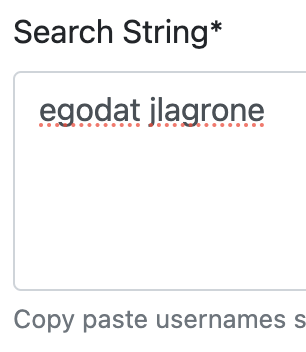 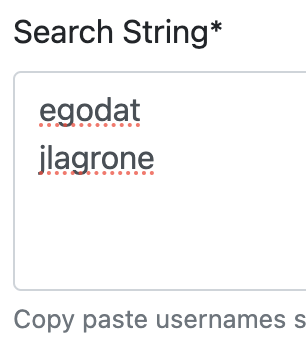-
Note
If a user has already been added to the project or class, then you will see a message like this
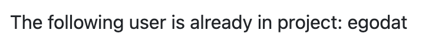 Select which allocation you would like users to be added to within the project under 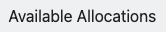.
Select the user(s) that you want to add from the list
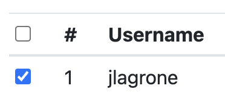and change their role to either Manager or User using the dropdown.
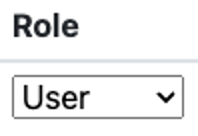Click on 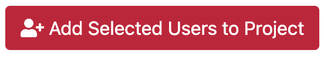
You can verify that a user has been added under Users on the Project/Class page.
{kind=link}
{kind=link}
{kind=link}
{kind=link}
{kind=link}
{kind=link}
{kind=link}
{kind=link}
{kind=link}
To an Allocation#
Note
When requesting an allocation you can give permissions to existing users. When adding a user to a project initially, you can add them to active allocations. The following instructions are for adding existing users to an active allocation.
Navigate to the Allocation details page by clicking on the allocation under
 in the 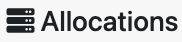 panel.
in the 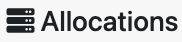 panel.Scroll down to the 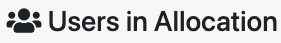 panel and click on .
Select which users to add to the allocation. If it is a Storage allocation, you will also need to select their Permissions (Read and Write or Read Only).
The user will still need to accept the Policies and Guidelines to use the allocation.
{kind=link}
{kind=link}
{kind=link}
Remove a User#
From a Project/Class#
{kind=link}
{kind=link}
{kind=link}
From an Allocation#
Change User#
Role#
{kind=link}
{kind=link}
{kind=link}
Allocation Permissions (for Storage allocations only)#
Navigate to the Allocation details page by clicking on the allocation under
in the panel.Scroll down to the panel and click on 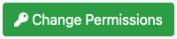.
From the , set the desired Permissions.
Note
Occassionally, it takes a while to provision users on the actual HPC systems. If you see a message like this
either your users have not accepted the Policies and Guidelines yet, or they are still being provisioned with their original permissions. Check back in a few hours and users may be eligible for a permissions change.
{kind=link}
{kind=link}
{kind=link}
{kind=link}
Notification Settings#
Under Users on your project page, you will see a column to 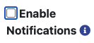.
Check or uncheck the box to enable or disable notifications for all users, or do so individually for each user.
Note
You cannot disable notifications for someone with the Manager role. As the PI or Instructor, you are responsible for monitoring changes to allocations in your projects.
{kind=link}